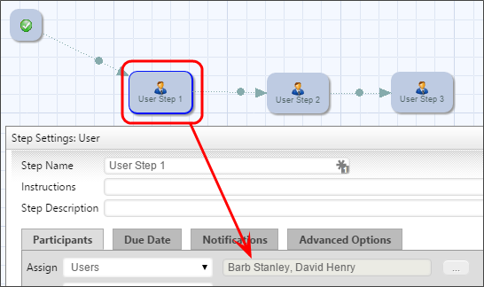
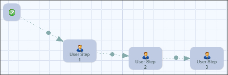
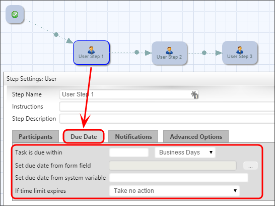
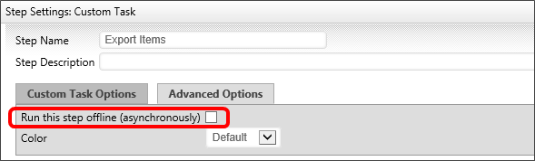

Workflow Definition
 BP Logix strongly recommends that you do NOT use Workflows. You should use the Process Timeline object as the process model for all new applications. The Workflow object is the legacy process model used in early versions of Process Director, and has been deprecated. It remains in the product solely for backwards compatibility, and hasn't received any new functionality updates since Process Director v4.5. For Process Director v6.1.500, Workflow creation is disabled by default in the product, though it can be re-enabled via a setting on the Global Variables page of the IT Admin area.
BP Logix strongly recommends that you do NOT use Workflows. You should use the Process Timeline object as the process model for all new applications. The Workflow object is the legacy process model used in early versions of Process Director, and has been deprecated. It remains in the product solely for backwards compatibility, and hasn't received any new functionality updates since Process Director v4.5. For Process Director v6.1.500, Workflow creation is disabled by default in the product, though it can be re-enabled via a setting on the Global Variables page of the IT Admin area.
Workflow is a complicated term. In Process Director, there is a Workflow object that enables you to create a process definition. The Workflow Object is an older method of creating process definitions that pre-dates the Process Timeline. "Workflow" is also a general process management term that is largely synonymous with the term "process".
In Process Director, a Workflow Definition is the automation object of a business process in which documents, information or tasks are passed from one participant(s) to another for action. A Workflow is made up of many functions and activities such as a review process, Task Lists, notifications, alerts/triggers, reminders, context sensitive tasks, an approval process, status/tracking, due dates and reporting.
What is a Workflow Definition?
Workflow definitions in Process Director are a series of logical steps, each with a specific task and assigned participants. The Workflow defines the path or route that a Form or document must take. Each step in the Workflow path defines the task type, the participants, and the rules that govern how the Workflow will advance or transition to the next step.
Users vs. Groups
Users and/or groups can be assigned to a step in a Workflow. When a Workflow definition is run, the group will be expanded and all users that are members of the specified groups will be added to the appropriate Workflow Steps. The Process Director Workflow engine supports parallel and serial reviews. To set up a parallel review process, add multiple users or groups to the same Workflow Step.

To establish a serial review process, add each user or group to a separate step.

Generally a review will be a combination of a parallel and serial process.
Task Email Notifications
As a Workflow advances to a step, the assigned users are automatically notified using your corporate email system. A custom email can be sent that provides users with special instructions that are relevant to this specific task.
Due Date Management
Due date management functions allow due dates to be set for the entire Workflow, as well as for each step in a Workflow. Periodic email reminders can be automatically sent to users that have not completed their task. When a due date expires for a step the due date escalation rules determine if the system should automatically advance the Workflow to the next step, notify another user, start a new Workflow process or jump to another step within the Workflow.

Asynchronous Operation
A Workflow Step of the Custom Task, Script or Sub-Process types can be configured to run asynchronously/offline by checking the check box labeled "Run this step offline (asynchronously)" in the Advanced Options tab. Setting the operation to run asynchronously can be used to prevent a long-running, machine-centric task in the Workflow from hanging a user session while the processing occurs. The step will be run in a different context than the current user that caused the transition of the step. Additionally, if you have a Rendering Server enabled, the asynchronous processing will be conducted by the Rendering Server when the asynchronous option is checked.

Please note that, when this option is selected, if the user's task is followed (after one or more intervening "background" tasks) by another task assigned to the same user, the current behavior in which the window remains open and is refreshed with the Form for the subsequent task will no longer be seen. Instead, the user will have to click the appropriate link in their Task List or email notification to open the new task.
On some systems, when starting a subprocess using the asynchronous option, the system can mark the calling task as complete before the called subprocess completes. This may be especially true if the subprocess contains complex rendering operations. To avoid this, a wait time, in seconds, can be set using the nAsyncSubProcessWaitSecs variable in the Custom Vars file. The default setting for this variable is 5 seconds.